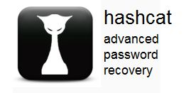

The goal of this homework assignment is to allow you to practice using functional programming to process data in Python. In this assignment, you will write a script that brute-force attacks a large collection of passwords using multiple processes. That is, we will use functional programming to construct a concurrent application, and then exploit this concurrency by using multiple CPU cores to execute the program in parallel.
For this assignment, record your scripts and any responses to the following
activities in the in the homework06 folder of your assignments GitHub
repository and push your work by noon Saturday, March 11.
Before starting this homework assignment, you should first perform a git
pull to retrieve any changes in your remote GitHub repository:
$ cd path/to/repository # Go to assignments repository
$ git checkout master # Make sure we are in master branch
$ git pull --rebase # Get any remote changes not present locally
Next, create a new branch for this assignment:
$ git checkout -b homework06 # Create homework06 branch and check it out
Once this is done, download the Makefile and test scripts:
# Go to homework06 folder
$ cd homework06
# Download the Makefile
$ curl -LO https://raw.githubusercontent.com/nd-cse-20289-sp23/cse-20289-sp23-assignments/master/homework06/Makefile
# Add and commit Makefile
$ git add Makefile
$ git commit -m "homework06: Add Makefile"
# Download the test scripts
$ make test-scripts
Note, you do not need to add and commit the test scripts since the
Makefile will automatically download them again whenever you run make.
You are now ready to work on the activities below.
With various password leaks being announced on a weekly basis there has been a lot of discussion on password hygiene and password strength. There is even a website to check have i been pwned.
In all decent password accounting systems, the raw password is rarely stored. Instead a cryptographic hash such as MD5 or SHA1 is used to record a user's password digest or checksum and it is these hashes that are leaked to outsiders in these all too frequent breaches. Because these cryptographic hash functions are generally considered one-way functions, attackers cannot directly obtain the original input password even though they know the output of the cryptographic hash.
For instance, the MD5 digest of goirish is:
$ printf goirish | md5sum
c761cc3341c91238ba735b26874572a0 -
As you can see, the string c761cc3341c91238ba735b26874572a0 does not
provide an attacker any clues about the original password goirish. To
obtain the original text, attackers often employ various
techniques
such as brute-force cracking.
hulk.py¶For the first task, you are to create hulk.py, which is a script that uses
brute-force to smash a set of MD5 hashes:
$ ./hulk.py -h
Usage: hulk.py [-a alphabet -c CORES -l LENGTH -p PREFIX -s HASHES]
-a ALPHABET Alphabet to use in permutations
-c CORES CPU Cores to use
-l LENGTH Length of permutations
-p PREFIX Prefix for all permutations
-s HASHES Path of hashes file
Given an ALPHABET (default is abcdefghijklmnopqrstuvwxyz0123456789),
hulk.py will compute the MD5 hash of every permutation of the
ALPHABET for the specified LENGTH and check if it is in the set of
HASHES. If a PREFIX is specified, then this should be inserted before
each candidate permutation.
For instance, suppose we had a sample.hashes file that contained the
following MD5 checksums:
0cc175b9c0f1b6a831c399e269772661
92eb5ffee6ae2fec3ad71c777531578f
4a8a08f09d37b73795649038408b5f33
900150983cd24fb0d6963f7d28e17f72
If we executed hulk.py with a LENGTH of 1, we should get the following
result:
$ ./hulk.py -l 1 -s sample.hashes
a
b
c
That is, hulk.py determined that three of the hashes correspond to the
passwords a, b, and c.
If we executed hulk.py with a LENGTH of 2 and a PREFIX of a, we
should get the following result:
$ ./hulk.py -l 2 -s sample.hashes -p a
abc
That is, hulk.py determined that 1 of the hashes corresponds to the
password abc. Note, we could have achieved the same results by executing:
$ ./hulk.py -l 3 -s sample.hashes
abc
The difference is the former searches each permutation in the form aXX
where X is a letter from the ALPHABET due to the PREFIX of a, while
the latter searches each permutation in the form XXX.
Finally, if CORES is greater than 1 and the LENGTH is greater than 1,
the script will use the concurrent.futures module to brute-force passwords
in parallel with the specified number of CORES:
$ ./hulk.py -l 1 -c 2 -s sample.hashes
a
b
c
To help you get started, the instructor has provided you with the following skeleton code:
# Download skeleton code
$ curl -LO https://raw.githubusercontent.com/nd-cse-20289-sp23/cse-20289-sp23-assignments/master/homework06/hulk.py
The skeleton code contains the following:
import concurrent.futures
import hashlib
import os
import string
import sys
# Constants
ALPHABET = string.ascii_lowercase + string.digits
# Functions
def usage(exit_code=0):
progname = os.path.basename(sys.argv[0])
print(f'''Usage: {progname} [-a ALPHABET -c CORES -l LENGTH -p PATH -s HASHES]
-a ALPHABET Alphabet to use in permutations
-c CORES CPU Cores to use
-l LENGTH Length of permutations
-p PREFIX Prefix for all permutations
-s HASHES Path of hashes file''')
sys.exit(exit_code)
def md5sum(s):
''' Compute md5 digest for given string. '''
return ''
def permutations(length, alphabet=ALPHABET):
''' Recursively yield all permutations of the given length using the
provided alphabet. '''
yield None
def flatten(sequence):
''' Flatten sequence of iterators. '''
yield None
def crack(hashes, length, alphabet=ALPHABET, prefix=''):
''' Return all password permutations of specified length that are in hashes
by sequentially trying all permutations. '''
return []
def whack(arguments):
''' Call the crack function with the specified list of arguments '''
return []
def smash(hashes, length, alphabet=ALPHABET, prefix='', cores=1):
''' Return all password permutations of specified length that are in hashes
by concurrently subsets of permutations concurrently.
'''
return []
# Main Execution
def main():
arguments = sys.argv[1:]
alphabet = ALPHABET
cores = 1
hashes_path = 'hashes.txt'
length = 1
prefix = ''
if __name__ == '__main__':
main()
You are to complete the sections marked TODO in order to complete the
hulk.py script.
For md5sum, you must compute the MD5 hash of a string by using the
hashlib library. To convert a unicode string into bytes, you can call
the str.encode method of the string object.
For permutations, you must use a recursive algorithm to implement
a generator using the yield statement. You may not use any of the
utilities in the itertools module for this function.
For the base case, you will want to consider what happens with a
length of 1 and for the recursive case, how you can combine the
alphabet with the results of permutations of length - 1 to yield
each permutation of the specified length.
if length == 1: # Base case
yield each letter in alphabet
else: # Recursive case
yield the combination of each letter with each permutation of length - 1
For flatten, you must use the yield statement to implement a
generator that takes a sequence of iterables and converts it into a
single sequence of values from the nested data.
The idea with this function is that given a nested sequence of iterators
such as [[A, B, C], [D, E, F]], you yield each item from the
subsequences: A, B, C, D, E, F.
For crack, you must implement the function using only list
comprehensions or generator expressions (you can use multiple ones).
Pay careful attention to not use too much memory in this
function, particularly when calling permutations.
For whack, you must implement the function by calling the crack
function with the provided list of arguments.
This function exists because map can only pass a single argument to the
function it applies. To workaround this limitation, we create the
whack helper function which takes a tuple of arguments which can then
unpack to call crack. That is, whack takes a tuple of four
items which correspond to the parameters to crack and we simply need to
call crack with these items:
# Calling whack should result in calling crack with the arguments
# tuple unpacked as parameters.
whack((hashes, length, alphabet, prefix)) -> crack(hashes, length, alphabet, prefix)
For smash, you must implement the function by using the map method
of the ProcessPoolExecutor from the concurrent.futures module in order to
take advantage of multiple CPU cores.
To allow for parallel execution, you will need to do divide up the
work normally done by one process. The easiest way to accomplish this
is by taking advantage of the prefix feature of crack.
For instance, if the specified LENGTH is 4, you can crack passwords
of length 3 with prefixes of [a, b, ..., 9] to achieve the same result:
Passwords of length 4 Prefixes + Passwords of length 3
aaaa a + aaa -> aaaa
aaab a + aab -> aaab
.... ....
baaa b + aaa -> baaa
baab b + aab -> baab
.... ....
In smash, you will need to create an arguments sequence that consists
of the argument tuples to pass to whack. As explained above, each tuple
consists of the arguments to crack: hashes, length, alphabet,
prefix. Based on the previous description, only the length and
prefix arguments need to be modified in the arguments sequence:
(original hashes, new length, original alphabet, new prefix)
For simplicity, we suggest that you use each letter in the alphabet as
part of the prefix in the arguments tuple, while keeping in mind that
you still need to account for the prefix passed to smash itself.
Because we are now using the prefix feature of crack, you will also
need to update the length argument in the tuple.
Your code should look something like this:
# Generator expression representing a sequence of arguments to pass
# to `whack` (hashes, length, alphabet remain constant, but prefix
# should change for each argument tuple).
arguments = ((...) for ... in ...)
# Create a ProcessPoolExecutor and then apply whack to the
# arguments
with concurrent.futures.ProcessPoolExecutor(cores) as executor:
... executor.map(...)
Because the executor.map will return a sequence of sequences, you will
want to use the flatten function you wrote to convert the result into a
single sequence.
You can parse the command line options as we have done in the past, or you can investigate using argparse or getopt.
To aid you in testing the hulk.py script, we are providing you with
test_hulk.sh, which you can use as follows:
# Download Makefile
$ curl -LO https://raw.githubusercontent.com/nd-cse-20289-sp23/cse-20289-sp23-assignments/master/homework06/Makefile
# Download test script, hashes.txt, and run test
$ make
# Run test script manually
$ ./test_hulk.sh
Testing hulk.py ...
Unit Tests ... 2.00 / 2.00
Usage ... Success
Hulk LENGTH 1 ... Success
Hulk LENGTH 1 (ALPHABET: abc) ... Success
Hulk LENGTH 2 ... Success
Hulk LENGTH 2 (ALPHABET: pbui) ... Success
Hulk LENGTH 3 ... Success
Hulk LENGTH 3 (ALPHABET: abc) ... Success
Hulk LENGTH 4 ... Success
Hulk LENGTH 4 (ALPHABET: kfriday) ... Success
Hulk LENGTH 2 (CORES: 2) ... Success
Hulk LENGTH 3 (CORES: 2) ... Success
Hulk LENGTH 4 (CORES: 2) ... Success
Hulk LENGTH 1 (PREFIX: a) ... Success
Hulk LENGTH 1 (PREFIX: 1, CORES: 2) ... Success
Hulk LENGTH 2 (PREFIX: a) ... Success
Hulk LENGTH 2 (PREFIX: a, CORES: 2) ... Success
Hulk LENGTH 3 (PREFIX: a) ... Success
Hulk LENGTH 3 (PREFIX: a, CORES: 2) ... Success
Score 10.00 / 10.00
Status Success
If you fail a function test but the output appears correct, it is mostly
likely that your code is too slow. In addition to checking the output of
your commands, the test_hulk.sh uses the timeout command to ensure your
program does not run for too long.
Carefully reconsider the data structures and functional programming methods you employed if your code is timing out.
In addition to the test script, there is also hulk_test.py, which contains
unit tests for most of the functions you need to implement. You can
execute these tests manually as follows:
$ ./hulk_test.py -v
test_00_md5sum (__main__.HulkTestCase) ... ok
test_01_permutations (__main__.HulkTestCase) ... ok
test_02_flatten (__main__.HulkTestCase) ... ok
test_03_crack (__main__.HulkTestCase) ... ok
test_04_whack (__main__.HulkTestCase) ... ok
test_05_smash (__main__.HulkTestCase) ... ok
----------------------------------------------------------------------
Ran 6 tests in 0.168s
OK
This will test each of the five functions individually and thus allow you to build and test your program one function at a time.
Do not try to write the whole program at once. Implement one feature at a
time and verify that it works. The unit tests are provided to allow
you to test individual components, while the test_hulk.sh is given to
enable you to test the completed solution.
Once you are confident that your program is correct, you are to use hulk.py
to brute-force crack set of 12124 password hashes found at:
https://raw.githubusercontent.com/nd-cse-20289-sp23/cse-20289-sp23-assignments/master/homework06/hashes.txt
To keep track of who has cracked the most passwords, you can submit your set of discovered passwords to the deadpool:
$ cat PASSWORDS | curl --data-binary @- http://xavier.h4x0r.space:9111/NETID
Replace PASSWORDS with the name of the file with your passwords and NETID
with your Notre Dame NetID:
# Generate passwords of length 1 and store them in passwords.txt
$ ./hulk.py -l 1 | tee -a passwords.txt
...
# Upload passwords.txt
$ cat passwords.txt | curl --data-binary @- http://xavier.h4x0r.space:9111/pbui
{"timestamp": 1488333215.967784, "passwords": 36}
For full credit, you must crack at least 8000 passwords. There are
12124 total hashes. Each password is no more than 8 characters long and
only consists of lowercase letters and numeric digits.
Many of the passwords in the password hashes collection were pulled from a recent Chegg password leak.
To speed up your computations, consider using different values for
CORES:
$ ./hulk.py -l 6 -c 2 # Use 2 processes
To find out how many cores a Linux machine has, you can do:
$ lscpu
Remember that you need to share the student machines with all the other students in class.
Therefore, do not run hulk.py on lengths larger than 6... otherwise
you will take up significant CPU resources away from other students for long
periods of time.
If you want to crack passwords of length greater than 6, you will need to
run hashcat on your own machines as explained in the Guru Point.
Once you have completed all the activities above, you are to complete the following reflection quiz:
As with Reading 01, you will need to store your answers in a
homework06/answers.json file. You can use the form above to generate the
contents of this file, or you can write the JSON by hand.
To test your quiz, you can use the check.py script:
$ ../.scripts/check.py
Checking homework06 quiz ...
Q01 0.50
Q02 0.30
Q03 0.20
Score 1.00 / 1.00
Status Success
This week there are two different opportunities for extra credit. You may choose to do one, both, or none of them.
Remember that you can always forgo this Guru Point for two extra days to do the homework. That is, if you need an extension, you can simply skip the Guru Point and you will automatically have until Monday to complete the assignment for full credit.
Just leave a note on your Pull Request of your intensions.

As can be seen, cracking passwords using brute-force is extremely slow, especially on CPUs. For extra credit, you are to download and use the hashcat program on your own computer:
hashcat is the world's fastest and most advanced password recovery utility, supporting five unique modes of attack for over 200 highly-optimized hashing algorithms. hashcat currently supports CPUs, GPUs, and other hardware accelerators on Linux, Windows, and macOS, and has facilities to help enable distributed password cracking.
The secret to hashcat's speed is that it can take advantage of your GPU (aka. your video card), which turns out to be a massively parallel computing system (basically a commodity supercomputer). You will learn more about the GPU's power in your Computer Architecture class, but for this extra credit, all you need to do is take advantage of it by using hashcat.
For optimal performance, your computer should use a discrete video card from Nvidia or AMD. Moreover, you will need to have the proper drivers and OpenCL software installed for hashcat to take advantage of your GPU.
Once you have downloaded hashcat to your own computer and the password
hashes file for this assignment, you should use hashcat to crack passwords
of length 7 and 8:
# Brute-force MD5 hashed passwords of length 7 with lowercase letters and digits
$ hashcat -a 3 -m 0 -1 '?l?d' -o passwords.7 --potfile-disable hashes.txt '?1?1?1?1?1?1?1'
# Brute-force MD5 hashed passwords of length 8 with lowercase letters and digits
$ hashcat -a 3 -m 0 -1 '?l?d' -o passwords.8 --potfile-disable hashes.txt '?1?1?1?1?1?1?1?1'
The current release of hashcat does not have support for the newest MacBook
Pros with the Apple Silicon M1 Pro/Max processors. Disregard these
instructions if you have an Intel Mac. If you still wish to complete the
guru point on these machines, it is possible if you compile the latest
development version from the project's GitHub. To do so, perform the
following instructions:
Ensure you have clang installed on your MacBook Pro. This is a C++
compiler comparable to gcc on Linux. You can check if you have it installed
by running clang --version inside of a terminal.
If it is not installed, then you must install Xcode from the MacOS App
Store. Xcode will not be needed for this project, but includes some
common development tools, including clang. Xcode is a large program; it
may take a while to install.
Clone the repository for hashcat, found at the following
link.
cd into the hashcat/ folder that was now created.
Run make to compile the program. This program is large, so give it some
time to compile.
You should now see a hashcat executable file in this folder. You can run
the commands above, but replace hashcat with ./hashcat to use the local
version in your current directory, and add -D2 to use your MacBook's GPU.
Here is an example usage:
./hashcat -a 3 -m 0 -1 '?l?d' -o passwords.7 -D2 --potfile-disable [PATH_TO_YOUR_HASHES.TXT] '?1?1?1?1?1?1?1'
Even though a GPU is basically a commodity supercomputer, cracking
passwords using brute-force still takes time. With a discrete Nvidia
GTX 980 in a desktop machine, cracking all passwords of length 8 took
about 20 minutes. On the other hand, with an integrated Intel 620
in a laptop, cracking all passwords of length 8 had a time estimate of
about 2 days.
This is still dramatically better than using say hundreds of machines for hours to crack passwords (which is what we have done in the past).
After executing these commands, the cracked passwords should be in the
passwords.7 and passwords.8 files. You will need to use either Python
or shell to extract the passwords and append them to the list of passwords
of lengths 1 - 6 you found using hulk.py.
To get credit for this Guru Point, you are to upload at least 10,000
passwords to deadpool. You have up until a week after this assignment
is due to verify your Guru Point (note, this means it is due at the end of
Spring Break).
Since brute-force cracking passwords can take a while, it would be nice to
give the user a progress bar so they can have an idea of how many
passwords hulk.py has checked and how much time is left.
For extra credit, you are to implement a progress bar in hulk.py using
the tqdm library. Given a -P flag, hulk.py should display output like
this:
Note: It is okay if the multi-core display is a bit janky (ie. notice
the multiple Crack(4, e) bars).
There are some race conditions when printing out to the terminal from
multiple processes and you are not expected to resolve them. Simply show a
progress bar for each crack function and that should be sufficient.
To get credit for this Guru Point, show your hulk.py displaying a
progress bar using tqdm to a TA to verify (or attached a video to your
Pull Request). You have up until a week after this assignment is due
to verify your Guru Point.
To submit your assignment, please commit your work to the homework06 folder
of your homework06 branch in your assignments GitHub repository.
Your homework06 folder should only contain the following files:
MakefileREADME.mdanswers.jsonhulk.pypasswords.txtThe passwords.txt should contain a list of all all the passwords you found
from the password hashes collection.
#--------------------------------------------------
# BE SURE TO DO THE PREPARATION STEPS IN ACTIVITY 0
#--------------------------------------------------
$ cd homework06 # Go to Homework 06 directory
...
$ git add Makefile # Mark changes for commit
$ git add hulk.py # Mark changes for commit
$ git commit -m "homework06: Activity 1" # Record changes
...
$ git add passwords.txt # Mark changes for commit
$ git commit -m "homework06: Activity 2" # Record changes
...
$ git add answers.json # Mark changes for commit
$ git commit -m "homework06: Activity 3" # Record changes
...
$ git push -u origin homework06 # Push branch to GitHub
Remember to create a Pull Request and assign the appropriate TA from the Reading 07 TA List.
DO NOT MERGE your own Pull Request. The TAs use open Pull Requests to keep track of which assignments to grade. Closing them yourself will cause a delay in grading and confuse the TAs.